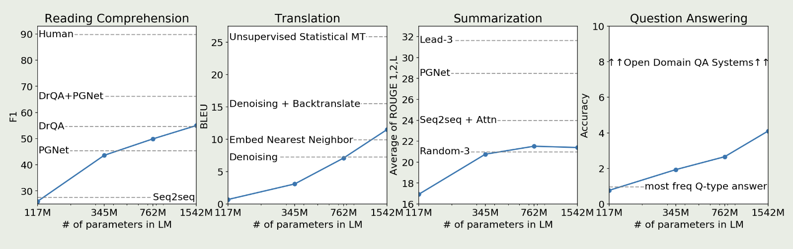

[GPT2] Language models are unsupervised multitask learners
2024-4-9
intro
本文认为一个自然语言模型应该是一个更具通用性的系统, 能够执行许多任务, 并且无需为每个任务手动创建和标注训练数据集
现有系统泛化能力不足的主要原因在于, 人们普遍在单一领域的数据集上进行单任务训练
多任务学习是一个有前景的框架. 然而, 因为它可能需要继续扩大数据集和模型规模, 这目前难以承载的需求迫使我们探索多任务学习的其它可能
本文证明语言模型在zero-shot下可以执行下游任务, 无需任何参数或架构的修改
Approach
NLP中的多任务学习:
- 把各种下游子任务都转换为QA任务, 通过prompt去引导模型自动执行不同的操作
GPT-2 使用zero-shot, 不做任何额外的下游任务训练, 而是提出prompt, 用自然语言的形式加在输入后面去提示模型
OpenAI推测, 当数据量足够大、模型能力足够强的时候, 语言模型会学会推测并执行用自然语言提出的任务, 因为这样可以更好的实现下一词预测
Experiments
图中可以看出GPT-2的效果并不好, 但是从曲线中可以看出, 随着参数规模的增加, 性能也在逐步提升, 而GPT-3就是在此基础上, 将参数增加了100倍